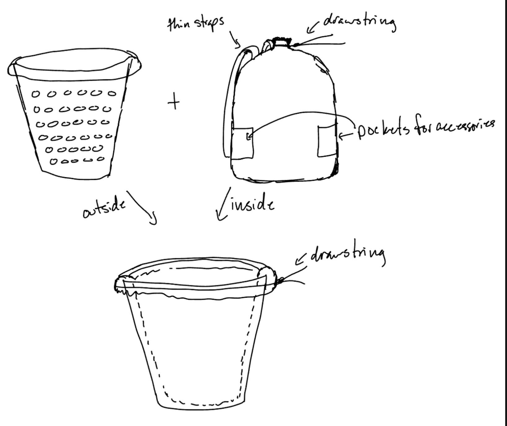
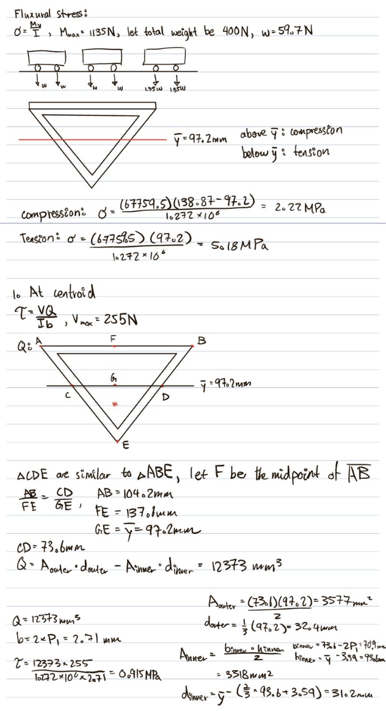

Praxis II Student Engineering Portfolio
Introduction
My Position
I am Hayson Cheung, a first-year EngSci student at the University of Toronto, and my perspective on Praxis has evolved significantly over the past year. Initially, I saw the course as inefficient and disconnected from real engineering work. However, through experience and reflection, I have come to appreciate its emphasis on structured problem-solving, teamwork, and critical thinking. While I still question certain concepts, I now recognize the value of the engineering design process as a whole.
At the start of the year, I was skeptical of Praxis I. Fresh out of high school, I had a naive view of engineering—one that prioritized technical knowledge over process. I often questioned the purpose of FDCR, the many reports we had to write, and the importance of team evaluations. To me, engineering was about building things, not discussing abstract frameworks. The coursework felt disconnected from what I believed to be real engineering work, making it difficult for me to engage fully.
As the year progressed, my perspective started to shift. Concepts that once seemed "useless" (like CTMFs) began to make more sense in the broader context of engineering design. I had previously thought that technical skills alone—calculations, drawings, and problem-solving—defined an engineer. After all, as EngSci students, we're supposed to be smart, right? But through experience, particularly in CIV 102, I realized that engineering is more than just arriving at a correct solution—it’s about how we approach problem-solving, communicate ideas, and collaborate effectively.
By the time I entered Praxis II, I had developed a more nuanced perspective. I started to appreciate the iterative nature of design and the importance of structured thinking. FDCR, which I once dismissed, turned out to be a crucial part of refining and improving solutions. I saw how team evaluations encouraged accountability and growth within a group. What once seemed like inefficient work now felt like a necessary part of the process.
Today, I value the engineering design process much more than I did at the start of the year. While I still maintain a critical mindset and may never fully embrace every CTMF, I recognize their role in shaping a well-rounded engineer. Growth within the Perry model has helped me understand different perspectives and goals in engineering design, reinforcing that problem-solving isn’t just about intelligence—it’s about structured thinking, teamwork, and adaptability. Ultimately, I believe that questioning ideas while staying open to new perspectives is essential for any engineer.
CTMFs in use
To provide a brief overview of the CTMFs that I discuss, I will be associating CTMFs with a project and my position at the time. These are:
- Praxis I - Trying to understand having well-defined requirements, prototyping, and teamwork as we navigate through a laundry collection opportunity.
- CIV 102 - Learning the importance of the proxy test, the realization of the Hoover Dam model, and how my perspective shifted in the Perry model.
- Praxis II - Understanding the importance of community, project management, and my current understanding of the iterative design process.
Praxis I - Learning and Failing, Learning to Fail
In ESC101, we created laundry collection concepts. I have provided a one-pager overview as follows (in the drop-down below):
ESC101 Laundry Collection Concepts
Background
The laundry process for Chestnut Residence students takes up to ten minutes per trip, with heavy loads causing significant stress on handles, seams, and straps. Existing laundry bags often deform, tear, or fail at attachment points, leading to frustration and additional waste. Furthermore, mesh designs, while allowing airflow, accumulate lint and moisture, contributing to odor buildup. A new solution must address these durability concerns while enhancing usability.
Key Stakeholders
Engineering Science students living in Chestnut Residence are the primary stakeholders, as they frequently transport laundry between their dorm rooms and the laundry room. Their main concerns include durability, ease of carrying, and the ability to store laundry accessories separately. Any new design must accommodate their needs while ensuring longevity and functionality.
Key Requirements2
Must transport 60L (11kg) of laundry, have 3+ compartments to carry detergent and other products
Must support full loads without damage, be easy to carry, and retain its shape.
Materials must be non-toxic, detergent-resistant, and include safety warnings.
Must withstand 120+ trips, resist tearing, and maintain structural integrity.
Proposed Designs
Our team explored various designs, including a roller bag, a chute system, and a two-piece design. The roller bag was rejected due to its limited capacity and potential for damage. The chute system was deemed impractical for the residence's layout and posed safety concerns. Ultimately, we proposed a two-piece design consisting of a cylindrical basket and an attachable drawstring backpack. The backpack provides a comfortable and ergonomic way for students to transport their laundry, offering ease of movement and improved dexterity. When not in use for transportation, the backpack is connected to the basket via a secure drawstring, ensuring that the laundry stays organized and preventing spillage.
Figure 1: Proposed design for the laundry collection project.
Key Features
- Two-Part Design: Combines a backpack for ergonomic transport and dexterity, confirmed through proxy testing to minimize user load. Prioritizes ergonomics over volumetric capacity.
- Capacity Trade-Off: Backpack has fixed capacity, requiring multiple trips for larger loads, unlike roller or chute designs. However, it meets typical load requirements.
- Compartmentalized Accessories: External compartments allow hands-free transport of accessories, aligning with dexterity needs but may challenge durability if not securely attached.
- Ease of Transportation: Focused on improving the laundry transport experience, addressing the primary stakeholder concern of difficult laundry handling.
Requirements Framework
Creating a requirements framework was initially tedious for me. I thought it was a waste of time to write down all the requirements, and I thought I could just do it. This reflected my naive early view that engineering was simply about building things rather than following structured processes. However, I realized that having a well-defined requirements framework is crucial for the success of any engineering design project. It helps to ensure that all stakeholders are on the same page and that the final product meets their needs and expectations. I learned that having a clear set of requirements can save time and resources in the long run, as it helps to avoid costly mistakes and rework.
An encounter with the stakeholdersA well-defined requirements framework would consider stakeholders' needs. Our team, however, did not fully understand the needs of our stakeholders. We focused on our own ideas and assumptions, which led to a "laundry chute" design that ignored noise and safety for other residents. This design was not well-received by the users, as a result. This experience was pivotal in shifting my perspective that engineering is more than just arriving at a technically correct solution—it's about understanding and addressing human needs. But this also highlights the importance of the reframing and refining process, as we are able to iterate with a new framing that considers the needs of others.
The importance of a requirements frameworkIn addition, this approach taught us the value of clearly defined objectives. Instead of relying on subjective priorities, we focused on actual user needs, which led to more effective designs. The requirements framework also improved our quality control process. We could systematically evaluate each design against our established criteria. This structured approach to decision-making reinforced the "accountability and growth" aspect I now value in engineering design. This method helped us filter out unsuitable designs with issues such as poor environmental impact or limited usability. Thus, it avoided wasting time on designs that didn't meet our standards.
So, after framing, and deciding on a design through divergence and convergence, we went to prototype our design...
Prototyping
Prototyping was also something that I did not fully understand at the start of the year, especially the concept of a low-fidelity prototype. I felt meaningless trying to create a 5-minute-craft style prototype, with not much real usage (note: 5-minute-craft is a YouTube channel that creates DIY crafts and hacks, often with low-quality materials and questionable functionality1). I thought it was a waste of time to create something that was not functional. This resistance reflected my initial belief that technical knowledge was paramount in engineering. However, I learned that low-fidelity prototypes are an important part of the design process.
Representing the designAs we are writing the design report, it is difficult to put the ideas and intentions in words. We tried our best on the report, but no matter how we put it, it is not as good as a simple physical prototype, no matter how bad it is. This reveals the inherent limitations of words and writing and the importance of visual representation. This experience directly contributed to my growing appreciation for the iterative nature of design that I now value. I learned that low-fidelity prototypes are a great way to communicate ideas and intentions, and they can help to clarify the design process. They also allow for quick iterations and feedback, which is essential for the success of any engineering design project. We ended up prototyping our final design with some tape, sticks, and a suitcase.
Prototyping also allowed us to test our designs and gather feedback from users. We were able to identify potential issues and make improvements before moving on to the final design. Through this process, I came to understand that engineering extends far beyond technical knowledge—it requires communication, visualization, and adaptation based on user feedback. This iterative process is crucial for ensuring that the final product meets the needs of the users and is functional and effective.
These advantages of prototyping were not fully understood by me at the start of the year. I thought it was a waste of time to create low-fidelity prototypes, but I learned that they are an essential part of the design process. They allow for quick iterations and feedback, which is important for the success of any engineering design project.
Team Evaluation and Constructive Feedback
Going into Praxis I, I was, internally, quite resentful of the concept of team evaluation. Growing up gay in a homophobic household and a competitive environment, speaking constructively to my closest team (my family) was difficult, and often dangerous - they are deeply religious and would object to any foreign thoughts. I was not used to the idea of giving constructive feedback, and I thought it was a waste of time to evaluate my team members. However, I learned that team evaluation is an important part of the design process.
The benefits of team evaluationThe paradigm shift of understanding its benefits comes near the end of Praxis I. Though I did not put much effort into the evaluation, I received some constructive feedback from my team members. I was surprised to see that they were able to identify areas for improvement and provide suggestions for how to address them. This experience directly reinforced my evolving position that "team evaluations encouraged accountability and growth within a group." This feedback was invaluable to me, as this is the first time I have received constructive feedback from my peers. It helped me to see my own weaknesses and areas for improvement, and it also tells me that giving feedback is a powerful tool in future collaborative projects.
I learned that team evaluation is an important part of the design process. It allows for open communication and collaboration, which is essential for the success of any engineering design project. This realization fundamentally shifted my understanding that engineering requires both technical ability and interpersonal skills—the "structured thinking, teamwork, and adaptability" that I now value. It also helps to build trust and respect among team members, which is crucial for effective teamwork. Praxis has really opened my eyes to the importance of team evaluation and constructive feedback. I now see it as a valuable tool for improving the design process and ensuring that the final product meets the needs of the users.
Conclusion of Praxis I
In conclusion, I learned a lot from Praxis I. I learned the importance of having a well-defined requirements framework, the value of prototyping, and the benefits of team evaluation and constructive feedback. These lessons have helped me to see the value of the design process and how it can lead to successful engineering projects. I am now more open to new ideas and perspectives, although I still have much to question. The CIV 102 bridge project became a natural way to continue my learning journey, and experience tools and processes in the design process.
There were times when we failed to deliver or communicate our ideas. We learned a lot from it, and much of the praxis principles were applied to make the learning more informative; in the end, we applied our lessons and tried to make something better, which is invaluable to the design process. I am now more open to new ideas and perspectives, although I still have much to question. The CIV 102 bridge project became a natural way to continue my learning journey, and experience tools and processes in the design process.
To future me: see if you have done these steps, these might help you!!!
The CIV 102 Bridge Project
In CIV 102, we created a bridge design project. I have provided a one-pager overview as follows (In the drop-down below)4:
CIV 102 Bridge Project
Background
We are tasked with designing and creating a light-strong bridge that is optimized for both weight and capacity, under the material constraint of a large mat-board and some contact cement. We are given a tight deadline and tight material constraints, the matboard is roughly 7' to 8' long on its long end. The bridge must withstand an increasing "running train" load on it, with two supports on its left and right.
Key Requirements
Must support a test load of 400N with a safety factor above 1.37.
Should use no more than 80% of the available mat board while maintaining structural performance.
Must be feasible for handcrafting using simple tools and should minimize complex cuts.
Should resist local shear buckling and withstand various load conditions.
Proposed Design
The final bridge design features an inverted triangular cross-section with a reinforced top layer. This configuration was chosen for its ability to maximize the centroidal height (ȳ), reducing compressive stress while maintaining high tensile strength. The design includes six diaphragms to prevent local buckling and optimize load distribution.
Figure 3: Proposed design and calculations for the bridge project.
Key Features
- Inverted triangular cross-section enhances load distribution and minimizes compressive stress.
- Additional mat board layer increases structural stability and glue adhesion.
- Folded joints reduce reliance on weak glue bonds, improving durability.
- Optimized material allocation ensures efficient use of available resources.
- Computational optimization techniques refined dimensions for the maximum factor of safety.
Alternative Designs Considered
- Square Design: Rejected due to increased local buckling risk.
- Modified Rectangle: Required excessive material and did not significantly improve safety factors.
- Trapezoid: Initially promising but was ultimately reduced to a triangle for optimal efficiency.
- Varying Cross-Section: Improved material distribution but introduced excessive manufacturing complexity.
Figure 4: 3D model of the bridge design.
Prof. Bentz captures the endeavor of Structural Engineering as "the art and science of designing and molding structures with economy and elegance so that they can safely resist the force that they are subjected". In retrospect, this captured the essence of the project as inherently engineering design. Much of the CIV 102 focused on the engineering aspect, which motivates me to explore the scientific principles in the praxis framework.
A very important aspect of CIV 102 is its emphasis on qualitative metrics and its technicality. This plays into something that I inherently enjoyed more, but in exploring that, I realized how Praxis principles are constantly in use, either actively or subconsciously. This realization marked the beginning of my transition from viewing Praxis as disconnected to recognizing its value in "real" engineering work. This led me to the gradual sense that praxis might be a subject worth studying and understanding, but more on that later.
Amid the technicality of this project, maths and numbers played an important role in the project, this is highlighted and emphasized in the CTMFs that I will talk about.
Proxy Testing
In creating our bridge, I did what I am best at. I created a software toolkit and algorithm to validate our design, and as evidence that our "inverted triangle" design is a mathematically optimized shape. I did this because I just wanted to test our design before the final bridge was built, but little did I know I was walking into a praxis CTMF itself, which at the time I was still quite resentful towards.
I realized that using a software tool is analogous to proxy testing to evaluate our design. This experience helped shift my perspective from prioritizing "technical knowledge over process" to appreciating how structured thinking tools could enhance my technical abilities. This method allowed us to simulate real-world conditions and test the performance of our design without the need for physical prototypes. By using software tools, we could analyze the structural integrity and load-bearing capacity of our design. In addition to that, software tools can give use optimizing steps and dimensions that can further the engineering design, and verify the effectiveness of the current design. For CIV 102, we have written a custom algorithm to determine the maximum load, suggest optimized dimensions, and verify that the triangle design is the most effective shape under the simulated load.
The qualitative matrices that we have been using, thus, played an important role in the proxy testing. By providing numerical goals, our proxy testing can scientifically determine the failure or success of the design. This allowed us to leverage the accuracy of software tools to determine the effectiveness of the design and provide a more accurate and reliable evaluation of the design.
Hoover Dam Model
Despite the perfect design that I thought it was, our technological abilities (craftsmanship for the mat-board) are often limited, and the design is not represented perfectly. In turn, it necessitates a shift of the theoretical model to accommodate that. In the project, we have to shift the calculation and account for the additional imperfection of the contact cement, and the calculation shifts and a more suitable dimension for the bridge is calculated and applied. This is a classic example of the "Hoover Dam Model" - a cycle of changing theoretical knowledge due to new observations and reality.
The "Hoover Dam Model" is a concept that describes the iterative process of refining and adjusting theoretical models based on real-world observations and experiences. This directly connected to my evolving position where I "started to appreciate the iterative nature of design" - something I had previously dismissed as inefficient. It emphasizes the importance of adapting theoretical knowledge to account for imperfections and limitations in practical applications. In the context of our bridge project, we had to adjust our theoretical calculations to account for the limitations of our materials and craftsmanship.
After I realized that the Hoover Dam model is an inherent part of engineering design, I felt more comfortable. I started actively considering the imperfections of our capacities and how that would inform new ideas and new designs. In the end, our ability to adapt the "Hoover Dam" model meant a smoother collaboration, as we clearly acknowledged how the design is affected by reality.
This is reflected in our constant nudging of the design when building the "Hoover Dam (the bridge)." As my teammates were updating me on the obstacles and mistakes that they encountered, I was able to adapt the design and the calculations to account for the imperfections. This process reinforced my growing understanding that engineering extends beyond simply "building things" to include communication, adaptation, and teamwork. This iterative process allowed us to refine our design and ensure that it met the requirements and constraints of the project.
Authority? authority. (Perry Model)
I would like to document my growth in the Perry model, as this is an important landmark of a paradigm shift in acknowledging perspectives and a signature of a deeper understanding of knowledge.
The Perry model is a framework that describes the stages of intellectual development in college students. It emphasizes the importance of understanding different perspectives and the need for critical thinking and reflection. In the context of our bridge project, I found myself at the "Authority" stage, where I relied heavily on the expertise of already established projects and our professor. I found it difficult to accept the inverted triangular design because there is no "Authority" that seems to suggest it.
Looking through online sources, and what our professor has been talking about, most of them are related to truss bridges or a T/I-beam design. That was the "Authority" that I consider reliable. I didn't trust, that my peers could run through the calculation correctly, and I was not sure if the inverted triangle design was the best design.
We ended up choosing the inverted triangle design because it was, frankly, quite unique and we all agreed that we can learn something from it; and that the calculations we made seem to validate it. This experience directly contributed to my current belief that "questioning while remaining open to new perspectives is essential for any engineer." The design was not perfect, but it was a good compromise between the "Authority" and our own understanding of the design. It ended up performing better than most of the designs that I would have considered "authority".
This experience taught me how different perspectives and sources could have drastically different outcomes under different conditions. For example, our matboard constraint wasn't applicable to the "Authority" design, and it is important to consult different perspectives and trust our own judgment at times, since we understand the framing and the constraints of our design, more than any big "Authority" would.
Conclusion of the CIV 102 Bridge Project and First Semester
After the first semester, I learned a lot about engineering design and the importance of understanding different perspectives. While I began the year believing that "engineering was about building things," I now recognized that it requires "structured thinking, teamwork, and adaptability" as my position statement reflects. I learned that engineering design is not just about the technical aspects, but also about the process and the people involved. I learned that having a well-defined requirements framework, using proxy testing, and understanding the Hoover Dam model are all important aspects of the design process. I also learned that it is important to be open to new ideas and perspectives, but also trust our own judgment at times. These new, dynamic perspectives carried to the next semester of Praxis.
However, I am still kind of unsure about the iterative process and how much that could help me, I still found a long research process tedious, and I probably still do. Those are more or less the key themes of Praxis II.
To future me: see if you have done these steps, these might help you!!!
Praxis II - Growth and Finding My Own
In Praxis II, we created a community project. I have provided a one-pager overview as follows (In the drop-down below) 6:
Praxis II Community Project
Understanding a Community
In Praxis II, we encountered the concept of community as a central focus. Communities often represent the primary stakeholders in engineering projects, so I want to highlight this aspect in my portfolio.
Before Praxis, I had never applied my engineering skills to work with an actual community, let alone formally documented this process using Praxis methodologies. This reflected my initial view that engineering was primarily about "building things" rather than understanding stakeholder needs. Writing community profiles and requests for proposals felt foreign. The research process initially seemed tedious, but we soon recognized its value.
We decided to visit the community site to speak with managers and understand its physical aspects. These conversations provided invaluable insights about serving the community, and the managers appreciated our thorough research. Our preparation enabled us to ask targeted questions about specific community challenges—information critical for identifying opportunities that we wouldn't have obtained without profiling the community first.
Nevertheless, meeting the community in person proved far more rewarding and tangible than remote research. This experience reinforced my evolving position that engineering "is about how we approach problem-solving, communicate ideas, and collaborate effectively." Experiencing the physical space firsthand was essential for scoping opportunities and creating an effective requirements framework—something impossible to achieve through emails or online research alone.
In retrospect, I've realized that while Praxis emphasizes formalized research methodologies (representing one form of "authority"), direct community interaction is equally vital. This insight directly connects to my current position where I "believe that questioning ideas while staying open to new perspectives is essential for any engineer." My new understanding is that Praxis approaches to community assessment must be complemented by actual interaction and firsthand understanding of the community.
Project Management
Project management is essential for engineers, enabling teams to work effectively and ensure products meet expectations and requirements. Our team encountered challenges in managing our project and reports, which I'll document here to improve my future approach.
We experienced communication breakdowns and misunderstandings about requirements. Without clear role assignments and task distribution, our work became fragmented. Team members worked asynchronously without coordination, resulting in incomplete deliverables that failed to meet assignment requirements or community needs.
We discovered that online communication created delays as we waited for responses, discouraging questions and promoting isolated work. This led to unreviewed contributions and duplicated efforts.
Our breakthrough came when we shifted to in-person meetings. This experience directly contributed to my current position valuing "teamwork and adaptability" in engineering practice. We realized that group chat messages often failed to convey clear information, while face-to-face discussions improved communication and mutual understanding. These meetings helped clarify roles and responsibilities, significantly improving our collaborative effectiveness.
During these meetings, we could work on individual tasks while easily consulting nearby teammates with immediate feedback—eliminating the delays inherent in asynchronous communication. This approach exemplified the "accountability and growth" I now recognize as crucial to effective engineering practice.
Managing Tasks through Meetings and Communications
I plan on using this approach in the future. In conjunction with having frequent meetings to catch up on the project, I plan on using a task management tool to keep track of tasks and responsibilities. This will help us stay organized and ensure that everyone is on the same page. Although we have created one, I plan to participate more in a shared document to keep track of our progress and make sure that we are all working towards the same goals.
Iterative Process
The iterative process and its underlying FDCR framework represent the core themes of both Praxis courses and engineering design generally. Initially, I viewed FDCR as inefficient and disconnected from "real" engineering work, reflecting my early position statement. I thought I understood these concepts, but my comprehension was superficial. I viewed iteration as simply "trying again" and wondered how it differed from Einstein's definition of insanity—doing the same thing repeatedly and expecting different results. I still have questions about this, so I want to document my evolving understanding of this fundamental aspect of engineering design.
Praxis II was structured to include at least two iterations: from the initial concept to the Request for Proposal (RFP) submission, and then to the final project. This structure demonstrated the benefits of reframing and rescoping. Our original RFP addressed three clay reclamation challenges: hydrating, drying, and kneading. After meeting with the community manager, we learned that kneading presented the greatest difficulty and deserved our primary focus. This insight, gained from our first iteration, allowed us to create a more targeted scope and requirements framework for our second iteration.
The RFP (our first iteration) 5 provided a comprehensive overview of the community's needs, but it was too broad. Through this practical application, I began to truly appreciate "the iterative nature of design" that I mention in my current position. The iterative process allowed us to refine our focus and create a more effective design. The first iteration 5 provided a community overview and established foundational requirements. Our refinement process then concentrated on a narrower scope—the kneading process—enabling a more focused and informed approach. The iterative process allowed us to refine our design based on community feedback and team insights.
I've learned that iteration isn't merely repetition but a process of learning and improvement. This realization marks my evolution from viewing Praxis as inefficient to recognizing that "structured thinking, teamwork, and adaptability" are essential for effective engineering. It involves understanding stakeholder needs and applying that knowledge to create better designs. The iterative process is fundamental to engineering design, and I've grown to appreciate its value through my Praxis coursework.
To future me: see if you have done these steps, these might help you!!!
Conclusion
I've become more receptive to new ideas and perspectives—growth that aligns with the Perry model of intellectual development. I've discovered that many natural problem-solving processes have corresponding Praxis frameworks. In creating this portfolio, I've applied the iterative process myself, going through multiple revisions to produce work I'm proud of. I now appreciate how iteration leads to better outcomes and have learned to value feedback and constructive criticism as tools for improvement.
Keep an open mind and learn from others. Don't hesitate to ask questions seek feedback, and remain receptive to diverse ideas and perspectives. Remember that iteration isn't about repetition but about learning and improvement. Continue challenging yourself to grow, and don't fear taking risks or exploring new approaches. Your future holds great promise, and I'm excited to see where your journey leads.